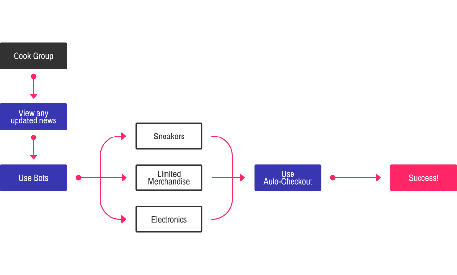

Overview
What is Data Dove?
Data Dove is a premium Discord group with the purpose of helping its members secure and purchase upcoming hype products. Data Dove provides news updates, bots, and live support related to any upcoming and hot products.
Our Purpose
As cook groups gained popularity, it was evident that new members were intimidated by the terms, methods, and procedures of “cooking”.
Data Dove focuses on assisting complete beginners dive into the world of cook groups.
What's a Cook Group?
Cook groups are communities of sneakerheads gathered together in hopes of acquiring hyped and upcoming sneakers. To assist in this, cook groups use bots to monitor information such as release dates, auto-checkouts, and any news of future products.
{kind=link}
As cook groups grew, they didn’t bound themselves to only sneakers; what started as a group for sneakers expanded into other objects such as merchandise, sales, and electronics.
Roles
Data Dove initially started with a 2 person team. The first person was in charge of social media, maintenance, promotions, and anything front face related. I was in charge of designing and developing all things related to Data Dove.
{kind=link}
Users
The primary users for Data Dove are new cookers. It is daunting to get started in the huge world of cook groups. We wanted to provide a safe haven for new individuals.
Our secondary users are experienced cookers. Although we primarily help new users, we make sure to provide useful features for both sets of users. We want our beginners to be able to stay in the same group even when they become more experienced.

Goals
From the bottom up
Being a completely new group, Data Dove needed a logo and website to build its brand and recognition. Since Data Dove was purely a Discord based group, the website was an important gateway for potentially interested viewers to know the purpose of Data Dove.
"We needed people to know who we were and what our purpose was. To begin, we had to create our brand identity."
I focused on the design and technical aspects for Data Dove. I was in charge of designing the logo, promotional video, advertisement, and fliers.
The other co-founder worked on social networking and promotional connections, as he already had a following of interested members. We also wanted to become affiliated with different cook groups and well known bot providers.
Logo Design
Beginning takeoff
I decided to look at the two words within Data Dove to come up with potential ideas for a logo. Having a bird design fit perfectly with “Dove”. Using the word “Data”, I decided to go with a low poly-esque direction for how the bird was going to appear.
{kind=link}
This went hand in hand with Data Dove being a somewhat-tech savvy group. I believe low poly graphics are widely used in tech related designs and that felt like a great way to represent the “data” part of Data Dove.
Below is a black and white version of the logo, but the main logo uses a high contrast of dark navy and bright pink - bringing a neon tech vibe to the logo.
Result
Website Redesign & Development
Opening the gates
The website was the main access point for new users so I had to consider what users saw at the gate of Data Dove. Because Data Dove primarily focused on new users, it was essential to present the necessary information of what Data Dove is, what Data Dove provides, and any last minute FAQs that a new member might have. Keeping all those in consideration, I designed and developed a website answering any questions that users may have.
{kind=link}
I integrated Stripe and Launchpass onto the website, allowing users to purchase their membership right there on the landing page. This provided new members immediate access and a direct flow from the website to the Data Dove Discord.
Result

The color scheme was inherited from the logo, but I brought in more complementary colors and shades to give a more diverse and vibrant look. Similarly, I kept the dark neon tech vibe throughout the whole website and made sure every component blended well with one another to create a smooth look and experience. I kept in mind the user experience and mobile responsiveness as I developed my design into a functioning website.
Conclusion
More than just a Cook Group - A Community
After going through a beta version of Data Dove, we were able to have a steady flow of members looking to dive into the cook group world. Through daily posts, active support, and affiliated bots, we gave new members a chance to experience firsthand quick checkouts and updates in the cooking world. More than that, Data Dove also became a place for people to unwind and socialize. What started as another cook group, evolved into a community of cooking, social activities, and helping hands.
We believe every person needs a great place to start, and Data Dove is the ideal starting point for new Cookers.

Back to top
Want to get in contact?
Feel free to send me a message for any questions or inquiries through my email at seo.kenny94@gmail.com.
Designed and developed by Kenny.